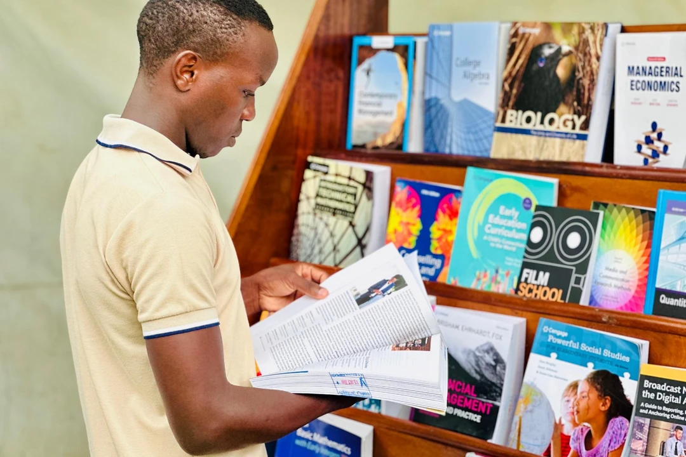

Our Academic Programmes
This section provides information about academic programmes, areas of study and learning opportunities. Programme details should be confirmed using the university's official information.

Business and Management
Explore areas related to business operations, management and entrepreneurship.
Computing and Technology
Explore information technology, computing, software and digital innovation.
school of nursing
Explore teaching, learning and educational development.
Learning at Kampala University
A university learning environment supports classroom study, research, independent learning and practical skills development.